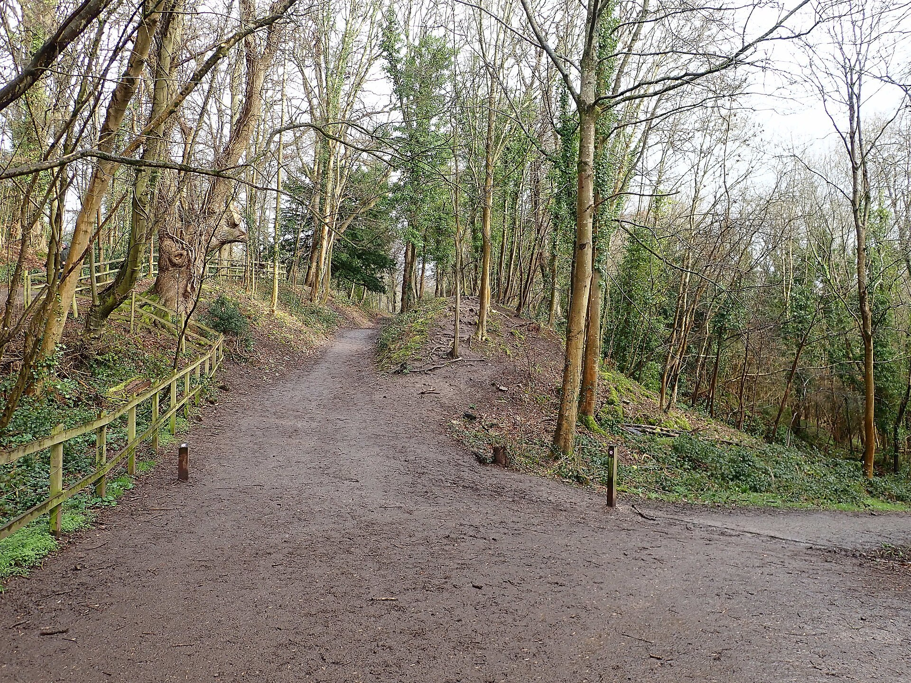
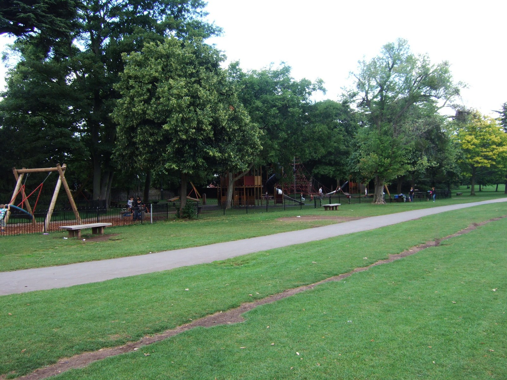
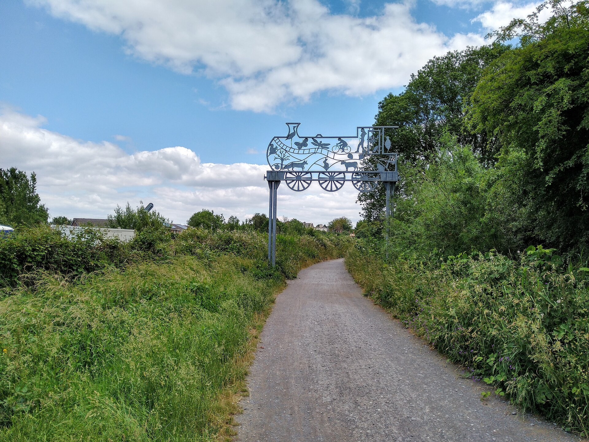
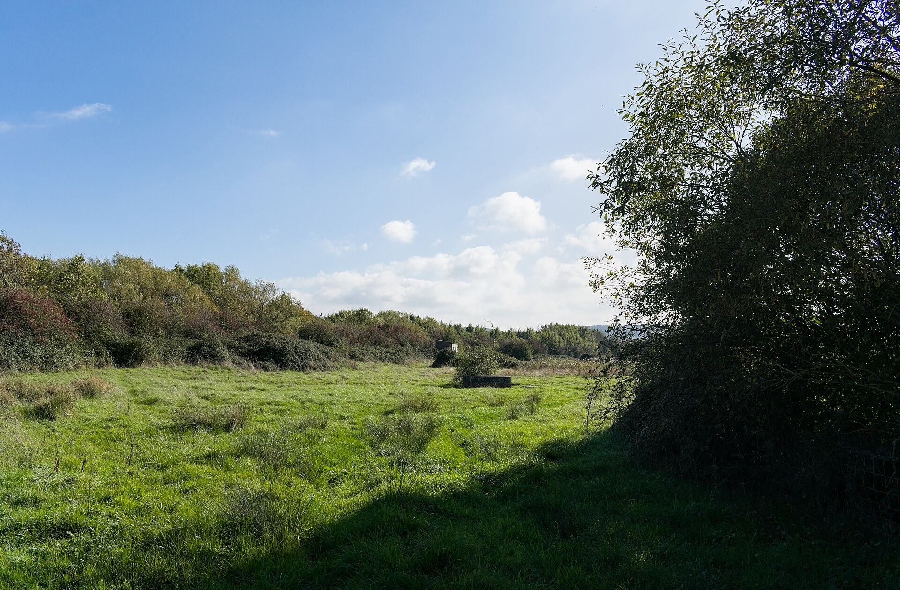

Explore a collection
Coastal Walks
Explore five real coastal outings, from Clevedon viewpoints to Somerset headlands. Choose a route that suits your family and the weather.

Fresh air, room to play
Woodland wanders, open parkland and seaside picnics for a day together.
Explore placesWoodland wanders, open parkland and seaside picnics for a day together.
6 categories to discover
Explore a collection
Explore five real coastal outings, from Clevedon viewpoints to Somerset headlands. Choose a route that suits your family and the weather.

Explore a collection
Discover six woodland walks around Bristol and North Somerset, with leafy paths, birdsong and room to slow down.

Explore a collection
Six real play parks for climbing, sliding and spending an active afternoon together.
Explore a collection
Find six places to share a picnic, from city lawns to open parkland and a lakeside setting.

Explore a collection
Seven family outings with plenty to notice along the way. Keep your route flexible and take time for breaks.

Explore a collection
Five outdoor places with free admission, where a little curiosity makes a memorable family day. Travel and parking may still cost extra.
More smiles. Less spending.
Discover lovely family days out that don’t cost a fortune.
Explore free days out